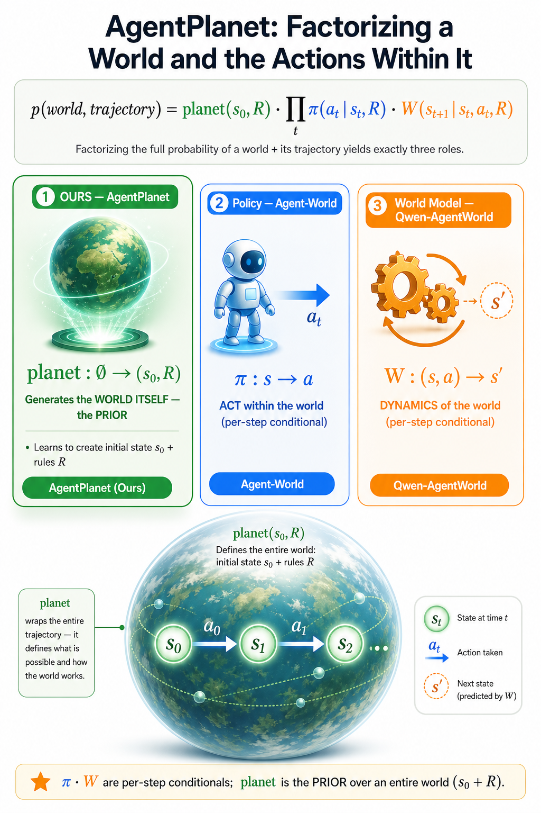
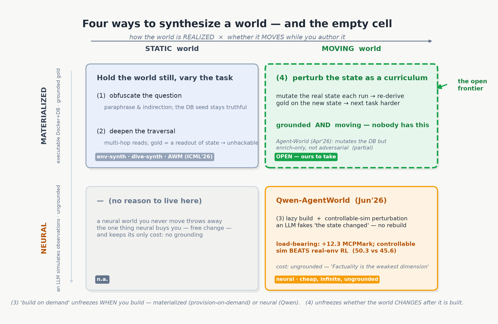

Home / Research Notes / AgentPlanet
One world, three roles, one model — and the plan to teach a model to author its own worlds.
Most of what I do day to day is hand-build environments for training tool-using agents: author a synthetic company, seed its database, expose a tool surface, then write tasks against it and grade them. AgentPlanet is the wish to hand that job to the model. A model that can author a world, act in it, and imagine its dynamics can generate its own curriculum — build a harder world, try to solve it, learn from the attempt — with no human hand-authoring the environment each round. This page is the running plan for getting there, and the part of it I'm most interested in right now: the one way of authoring a world that nobody has built yet.
Write the probability of a whole world together with a trajectory taken inside it, factor it the only way the chain rule allows, and you get exactly three pieces:
Three factors, three things a model could learn to be. π : s → a is the policy — it inhabits the world and picks the next action. W : (s, a) → s′ is the world model — it simulates, predicting the next state. And planet : ∅ → (s₀, R) is the odd one out: it takes nothing and emits an entire world — the initial state s₀ plus the rule-set R (tasks, rubric, verifier, gold). π and W are one-step conditionals; planet is a prior over a whole world. The unifier is that R is a single object wearing three hats: planet authors R, W predicts through R, π is graded by R. The bet is that if one model can play all three roles, self-evolution falls out almost for free.

The useful surprise is that the planet role already exists as a pipeline, split cleanly in two. env-synth generates s₀ — a synthetic company, its seeded database, its tool surface, its entities — and dive-synth generates R — the tasks, the rubric, the verifier, the gold. So, roughly,
"Teach the model environment synthesis" just means make the model do what this pipeline does by hand. And the moment you look closely at that pipeline, you notice it makes a very specific choice about how it authors a world — a choice it shares with most of the field, and one I now think is a ceiling. It freezes the world. env-synth seeds a database, bakes it into a container image, brings it up — and from that instant the state is a fact that does not change while dive-synth writes tasks against it. That freezing is what makes our gold trustworthy: because the seed never moves, the gold answer is a deterministic readout, and the verifier is just the environment's own constraint query. Grounding is the whole point of the line. But the freezing is also a ceiling, and seeing why is the rest of this page.
The "approaches" I keep hearing us talk about are not four systems. They're four processes for emitting a world (s₀, R), and they differ on two questions only. How is the world realized — as materialized executable state (a real container + database whose gold is a deterministic readout), or neurally (a language model predicts each observation, ungrounded)? And does the world move while you author — held static, one immutable draw, or moving, mutated as part of the process? Two axes, four cells.

The left column is where we live, and it splits by where the difficulty comes from. (1) Obfuscate the question is env-synth first — the state is up before a single task exists — and then difficulty is loaded into the instruction: paraphrase and indirection, hiding the load-bearing fact inside emails and tickets. The discipline that matters is that obfuscation touches the instruction text and never the seed, so the deterministic verifier still holds. (2) Deepen the traversal is the dive-synth half, and it makes the task a multi-hop readout of the persisted state: aggregate over a whole child set, walk a cross-service constraint graph, force real writes. Because the gold is derived from the state, the task is unhackable — you cannot answer it from parametric memory, only from the world. The purest outside example of this quadrant is AWM (UNC + Snowflake, ICML 2026), 1,000 database-backed MCP environments graded by end-state. And it is the paper that draws the boundary of the whole column out loud: in its own limitations it says it "does not evaluate behavior under intentionally injected adversarial perturbations such as corrupted database rows, malicious tool outputs, or prompt-injection." The best static-materialized system names the moving cell — and declines it.
Approach (3) unfreezes not the world after it's built, but when you build it — and it has two flavors worth separating. Materialized-lazy: don't pre-build the whole world; provision only the state a task actually needs, when it needs it, on a persistent substrate you never throw away. This is genuine on-demand construction that keeps grounding, and it's an active direction. Neural-lazy is Qwen-AgentWorld's answer to the same wish: don't build the state at all — a trained Language World Model predicts each observation turn-by-turn, "without requiring dedicated infrastructure." Infinite worlds at near-zero marginal cost, and ungrounded, which they pay for directly ("Factuality is the weakest dimension," "State is the bottleneck"). Same "on demand," opposite trade: one keeps grounding and pays to build the slice; the other drops the slice and pays in fidelity. Either way, (3) is still a static world once the slice exists. It moves creation, not evolution.
That leaves the top-right corner. (4): each run, mutate the real state to escalate, and re-derive gold on the new state. Not the observation — the state. This is the first of the four processes that runs the world-transition operator W at authoring time rather than at rollout time. And here is the tie back to the three roles: I tested a neural W end-to-end and it came back a characterized negative — served a frozen policy the learned world-model's observations, it solved 0 of 40 tasks where the real oracle solved 32. Approach (4) is the materialized W: you don't ask a model to imagine the next state, you execute a real delta and re-derive the gold deterministically. The thing the learned world-model couldn't do, the executable substrate can.
Look at who is near this cell and you can see it is empty. Qwen-AgentWorld moves the world hard, and proves it is the biggest lever there is — its "controllable simulation" injects errors, withholds partial results, and forces pagination, worth +12.3 on MCPMark, and controllable simulation beats training in the real environment (50.3 vs 45.6). But it moves the world neurally; nothing is re-materialized, the model just says the state changed. Agent-World (RUC + ByteDance, Apr 2026) mutates a materialized database, but only as enrichment for diversity, never adversarial: it grows the world, it doesn't sharpen it against the agent. And AWM refuses to move the world at all. So materialized × moving-adversarially is unoccupied — and it is exactly the cell where our grounding stops being a constraint and starts being the advantage.
If it were free it would already exist. It isn't, for three reasons, and they are the honest content of this plan.
Gold goes stale the instant the state moves. The whole grounding guarantee is that gold is a readout of the seed; move the seed and every cached gold is wrong. Our controllable-sim layer dodges this precisely by never touching the store — which is why it can make a task hard but not harder, run over run. Approach (4) can't dodge it: every escalation step has to re-derive gold on the new state. Materialized is what makes that even possible — re-run the constraint query against the mutated database and you get a fresh, correct gold — but you pay that derivation on every step.
Escalation can break solvability. An unconstrained state edit can make a task unsolvable or degenerate, and the fastest route to a "harder" world is a broken one — the failure that sinks PAIRED-style generators. It is exactly why Agent-World's mutation stays enrichment. A (4) loop needs an anti-degeneracy gate after each mutation: the task must still be reachable through the declared tool surface (in one audit, 77 of 167 constraints were tool-unrealizable — about 91% dead yield), and the gold must still be derivable. The world-design invariant battery is the right shape for that gate, run inside the escalation loop rather than once at the end.
The consequence loop is a reward-integrity hazard. The version of (4) that excites me most is the closed one — the agent's own verified delta commits into the world and shapes the next task. But if the same pipeline both mutates the world and grades it, the generator can drift the world toward states where its own answers look right — Goodhart on the reward channel itself. This is the precise reason a controlled study of reward-channel integrity — deterministic oracle versus LLM-judge — has to land before (4) closes its loop, not after.
Open-loop first, because the cheap experiment answers the load-bearing question. Take a verified rollout delta — gated by the deterministic constraint-query verifier, not the judge — commit it into a branch of the versioned world so the trunk stays clean and the mutation costs a branch, not a rebuild; re-derive gold on the branch; derive the next task from the harder state. Run it on a fixed perturbation schedule, not agent-driven, and ask the one question worth asking first: does a materialized world that moves beat the same world held static, at equal grounding? Qwen answered that yes for a neural world. Nobody has answered it for a grounded one — and if the answer holds, it holds without the fidelity tax the neural route pays. Only after the reward channel is shown un-gameable do I close the loop and let the agent's own actions drive the escalation. The deliverable that would outlive any single model is the artifact underneath: the first grounded moving-world synthesizer — the materialized answer to neural controllable simulation.
Because this is a plan and not a pitch: of the three roles, only π is mature. Here is where the pieces actually sit.
| Role / piece | Status |
|---|---|
| π — policy | Mature. This is what we train and evaluate today. |
| W — world model (neural) | Tested end-to-end, characterized negative: 0/40 vs a 32/40 oracle. The signature is "heuristic-not-world-model," not a capacity verdict. |
| planet — world author | Runs by hand as env-synth ∘ dive-synth; learning it is Stage-1 (gate-pass 0.50 → 0.83), Stage-2 waits on a served checkpoint. |
| (1)(2) static-materialized | The production system. Instruction-obfuscated tasks and multi-hop state-readout tasks, verified against the environment's own constraints. |
| (3) on-demand build | An active direction (materialized provision-on-demand; the neural counterpart is Qwen's Language World Model). |
| (4) moving-materialized | The empty cell. A thesis plus a concrete plan — not a trained system. Gated on reward-channel integrity before the loop closes. |
I've spent a year making worlds that stand perfectly still so their gold can be trusted. The bet in the empty cell is that I can let them move and keep the gold trustworthy anyway — because when the state is real, re-deriving the truth is just another query.
Related: the research note AgentPlanet: one world, three roles, one model (the factorization and the self-similar recursion) and the papers cited above — AWM, Agent-World, Qwen-AgentWorld.
Last updated 2026-07-18.
Template based on Jon Barron's website.